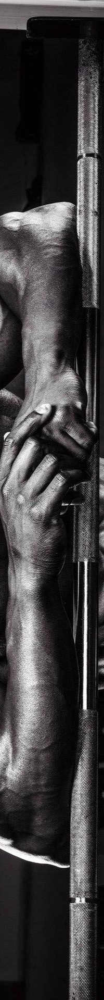
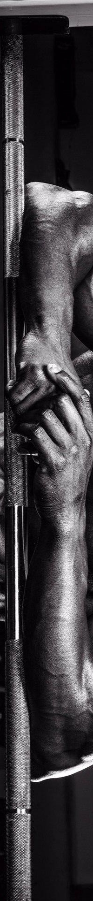

Tout d'abord, il faut savoir qu'en foncton de son ambition, la manière de s'entraîner ne sera pas la même. Il
est possible de grossièrement diviser les pratiquants en 3 catégories: les culturites, ceux qui pratiquent la
musculation en complément d'un autre sport et ceux qui veulent se remettre en forme.
Les culturistes cherchent à développer le plus possible le moindre muscle. C'est pourquoi il est conseillé
pour eux
de s'entraîner régulièrement et avec des exercices d'isolation. Pour ceux qui se musclent en complément d'un
sport, il est conseillé de cibler les exercices pour leur sport principal mais également de faire des
exercices
poly-articulaires. Pour ceux souhaitant se remettre en forme c'est totalement libre et il est possible aussi
de
faire pas mal de cardio.
l. Organisation générale:
Programme
Tout d’abord, il faut se constituer un programme d’exercices, une routine à tenir. En fonction de son emploi du temps et de ses objectifs, il faut déterminer le nombre de fois qu’il faut aller à la salle. Dans le tableur ci-dessous, différents programmes sont proposés. Il faut ensuite adapter son programme en fonction de ses retards. Par exemple, si les jambes sont trop peu développées par rapport au reste du corps, il est possible de faire les jambes 2 fois par semaine. Attention cependant à ne pas finir par négliger un autre groupe musculaire et créer un nouveau retard.Echauffement
Une fois à la salle, il faut commencer par s’échauffer. En effet, avant tout effort physique il faut échauffer son corps en faisant des efforts à basse intensité, comme par exemple 5 minutes de cardio, pour faire monter le coeur en intensité. Cela permet au coeur d'envoyer plus de sang dans les muscles et ainsi qu'ils soient mieux oxygénés. Ensuite, il faut faire tourner les articulations comme les coudes, les poignets, les genoux, pour les lubrifier et ainsi éviter les blessures. Enfin, il faut échauffer ses muscles, pour débuter leur effort en douceur, en mettant des petites charges: Cela permet une meilleure efficacité des réactions chimiques qui génèrent l'énergie grâce à l’apport d’oxygène dans les muscles.Le corps utilise de l’ATP (Adénosine-TriphosPhate) pour produire l’énergie. Il y a une très petite quantité d’ATP déjà stockée dans le muscle, mais le reste doit être synthétisé à partir d’autres carburants dans le corps par un ensemble de réactions chimiques: phosphocréatine, glucose, graisse et protéine. Il existe trois processus distincts pour la production d’ATP, connus sous le nom de « filières énergétiques ». Deux des filières sont anaérobies et ne nécessitent pas d’oxygène, tandis que la troisième est aérobie et demande de l’oxygène (« aérobie » signifie « avec oxygène »).
La principale différence entre les deux est donc l'utilisation ou non de l'oxygène apporté par la respiration. Le métabolisme anaérobie, avec deux variantes (alactique ou lactique), intervient dès le début de l'exercice et peut fonctionner en l'absence d'oxygène. Il est directement optimal pour l'alactique (mais d'une durée très courte) et avec un délai d'une dizaine de secondes pour le lactique. L'alactique permet un apport explosif d'énergie. Ce métabolisme, mis en route dès le début, libère une très grande puissance en un temps très court (moins de 10 secondes). Le facteur limitant est l'épuisement des réserves locales en ATP.
L'anaérobie lactique prend ensuite le relais : sa puissance est un peu plus faible mais sa capacité plus importante. Il ne nécessite pas d'apport spécifique en oxygène et utilise principalement des glucides. En fabriquant de l'ATP, il produit également de l'acide lactique (souvent appelé lactate), qui pourra être recyclé. Le métabolisme aérobie libère de l'énergie de façon relativement lente mais régulière. C'est un réservoir quasi inépuisable qui mobilise différents substrats (glucides et lipides principalement). Il permet des efforts longs mais pas à puissance maximale et on parle alors d'endurance.
ll. Exercices classiques:
Voici un tableur récapitulatif et explicatif des meilleurs exercices pour chaque groupe musculaire ainsi que
le
principal
muscle sollicité.
lll. Conseils généraux:
L'idéal est de faire entre 3 et 4 séries du même exercice avec une
pause entre chaque série, à juger au ressenti.
Le nombre de répétition (nombre de fois que le mouvement est effectué) par série dépend de l'objectif fixé. Si
l'objectif est de prendre en force, il est
conseillé de mettre des charges très lourdes et de faire maximum 5 répétitions. Pour les exercices avec des
charges élévées, il est bien de faire des exercices poly-articulaires (mobilisant plusieurs muscles). Si
l'objectif est l'hypertrophie musculaire, c'est-à-dire de vouloir chercher la croissance musculaire, il faut
viser entre 8 et 12 répétitions, avec des charges moins lourdes évidemment mais des charges telles qu'au bout de 8 à 12 répétitions le ou les muscles soient mis en échec. Rien ne sert de mettre trop léger et s'arrêter sans forcer. Si l'objectif est l'endurance
musuclaire, il faut privilégier plus de 30 répétitions.
Les muscles ne savent evidemment pas compter mais c'est le temps sous tension qui va compter.
Le nombre d'exercice par groupe musculaire dépend de la longueur de l'entraînement souhaitée, la forme physique...
Il faut également bien sentir le muscle qui est en train de travailler et se concentrer dessus. Pour cela, il est possible de venir toucher le muscle lors du mouvement (notamment lors d'exercices unilatéraux à la poulie ou aux haltères) ou alors de faire du "posing", c'est-à-dire de contracter sans l'aide de poids un ou des muscles en particulier après un exercice ou une séance sur ce ou ces muscles. Cela va ainsi créer la "mind-muscle connection" et établir des liaisons nerveuses entre le cerveau et les muscles. créer ces liaisons permet de vraiment isoler un muscle en particulier (celui qui doit travailler) et permet d'éviter d'engager d'autres muscles.
Autre point: Il ne faut pas négliger le cardio, même s'il n'est pas toujours sur les programmes, rien n'empêche d'aller courir ou d'aller faire du vélo (moins traumatisant pour les articulations) un matin. Il est toujours bon de faire travailler le coeur. Surtout pour les personnes en prise de masse.
Les muscles ne savent evidemment pas compter mais c'est le temps sous tension qui va compter.
Le nombre d'exercice par groupe musculaire dépend de la longueur de l'entraînement souhaitée, la forme physique...
Il faut également bien sentir le muscle qui est en train de travailler et se concentrer dessus. Pour cela, il est possible de venir toucher le muscle lors du mouvement (notamment lors d'exercices unilatéraux à la poulie ou aux haltères) ou alors de faire du "posing", c'est-à-dire de contracter sans l'aide de poids un ou des muscles en particulier après un exercice ou une séance sur ce ou ces muscles. Cela va ainsi créer la "mind-muscle connection" et établir des liaisons nerveuses entre le cerveau et les muscles. créer ces liaisons permet de vraiment isoler un muscle en particulier (celui qui doit travailler) et permet d'éviter d'engager d'autres muscles.
Autre point: Il ne faut pas négliger le cardio, même s'il n'est pas toujours sur les programmes, rien n'empêche d'aller courir ou d'aller faire du vélo (moins traumatisant pour les articulations) un matin. Il est toujours bon de faire travailler le coeur. Surtout pour les personnes en prise de masse.
Le téléchargement du tableur est impossible directement sur github (trop volumineux). Pour l'obtenir, veuillez me contacter.
lV. S'entraîner selon sa morphologie:
Il s’agit maintenant d'adapter les exercices à son corps (cf. partie sur l'anatomie):
Il est donc important de varier sa technique, les angles et les prises. Non seulement pour tirer le meilleur profit de sa génétique mais également pour solliciter des fibres musculaires différentes. Il est bon de ne jamais habituer son corps à un exercice en particulier, si l'objectif est de prendre de la masse musculaire. C'est pourquoi il est aussi conseillé de changer sa routine d'exercice de temps en temps.
Pectoraux
Pour le développé couché, les brévilignes disposent d’une amplitude de mouvement moins importante lors de la descente de la barre, d’un part à cause de la plus courte longueur des bras et avant-bras et d’autre part à cause de leur cage thoracique plus épaisse, rendant l’exercice moins contraignant pour le grand pectoral qui se retrouvera peu étiré. Au contraire les longilignes auront plus de chemin à parcourir pour monter et descendre la barre, ce qui accroît l’étirement du grand pectoral lors de la phase négative et dans le même temps le risque de blessure. Les longilignes ont donc plutôt intérêt à réduire la descente de la barre ou resserrer la prise pour réduire les risques de déchirure ou d’arrachement du grand pectoral, et ainsi adapter sa morphologie à l’exercice. Il est aussi possible de s’orienter vers le développé couché aux haltères qui procure de meilleures sensations sur les pectoraux grâce à un travail réduit des deltoïdes.Jambes
Pour le squat, les brévilignes en tireront le meilleur profit pour les quadriceps que les longilignes à cause de la longueur de leur fémur moins importante. En effet, pour les brévilignes le buste s’incline peu ce qui diminue les tensions au niveau des lombaires et des ischio-jambiers. Les longilignes ont le buste beaucoup plus incliné ce qui accroit les tensions. Le principale risque encouru, qui est également une des blessures en musculation la plus connue est la hernie discale. Pour soulager le dos, il est possible de disposer un poids sous ses pieds pour surélever les talons et posez la barre au niveau des deltoïdes postérieurs. Il y a quand même un atout pour les longilignes pour cet exercice puisqu’il permet lors du squat de travailler intensément lombaires et fessiers.Dos
Au soulevé de terre, pour le dos, les brévilignes seront les plus en difficultés. Le fait d’avoir des membres courts n’est pas l’idéal. Ceci oblige le pratiquant à fléchir davantage pour aller saisir la barre au sol, ce qui énergivore. Si vous êtes de type brévilignes, il convient donc de travailler sa technique d’exécution, notamment lors du départ barre au sol. Dans un premier temps, vous pouvez démarrer avec la barre surélevée et/ou un poids moindre. Les longilignes avec des fémurs longs pourront profiter d’une aide accrue des quadriceps au départ du mouvement, ce qui permet de gagner quelques kilos sur la barre et de se prémunir, un peu plus, des blessures lombaires.Bras
Pour les bras, en particulier le curl biceps à la barre, certaines personnes utilisent une barre EZ. Cette barre permet de limiter les tensions trop importantes aux poignets que subissent certains individus lors de flexions des bras avec une barre “normale”. En effet, chez certaines personnes l’angle d’ouverture du coude, c’est à dire entre le bras et l’avant-bras, est plus prononcé. C’est ce que l’on appelle « le valgus du coude ». En position debout bras tendus le long du corps avec les mains en supination, l’avant-bras part largement vers l’extérieur ce qui rend l’entrainement douloureux. Il est donc conseillé pour cette différence morphologique d’utiliser une barre EZ.Il est donc important de varier sa technique, les angles et les prises. Non seulement pour tirer le meilleur profit de sa génétique mais également pour solliciter des fibres musculaires différentes. Il est bon de ne jamais habituer son corps à un exercice en particulier, si l'objectif est de prendre de la masse musculaire. C'est pourquoi il est aussi conseillé de changer sa routine d'exercice de temps en temps.
